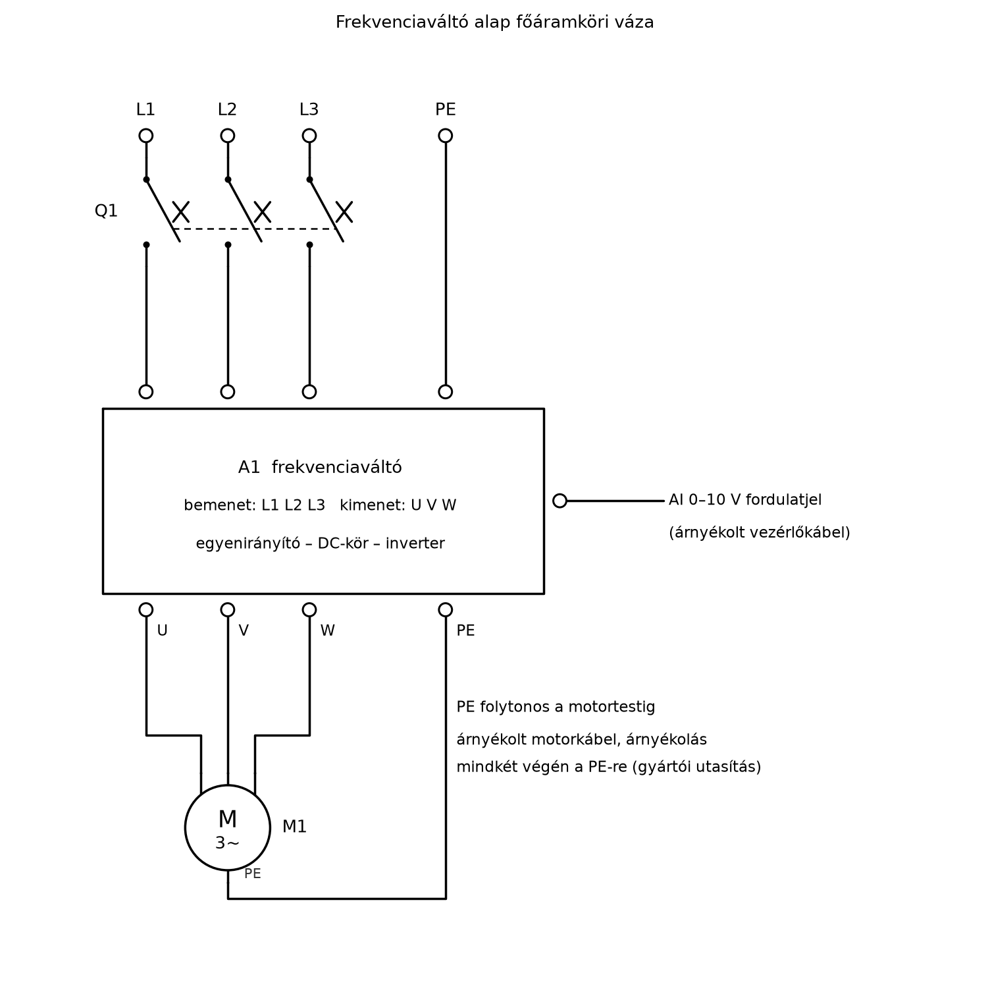

![Dahlander-motor (Δ/YY) átkapcsolás elvi főáramköre - Szemléltető, háromvonalas elvi vázlat: K1 a lassú fokozatban az 1U–1V–1W kapcsokat táplálja (Δ, 2U–2V–2W nyitva); a gyors fokozatban K2 a 2U–2V–2W kapcsokat táplálja, K3 pedig az 1U–1V–1W kapcsokat köti össze (YY csillagpont). K1 és a K2+K3 páros villamosan és mechanikusan reteszelt, mindkét fokozatnak saját hőkioldója van (F2, F3). PE a motortestre. A pontos kapocskiosztást a motor kapocstáblája és a gyártói dokumentáció adja meg (ellenőrizendő).](assets/ve097-diagram-1.png)
Egy szellőzőventilátornál gyakran nem a teljes levegőmennyiségre van szükség. Ha a motort állandó névleges fordulatszámon járatjuk, és a levegőmennyiséget zsalukkal vagy fojtószerkezettel csökkentjük, a motor továbbra is majdnem teljes áramot vehet fel, a fölösleges nyomás pedig a fojtáson hővé alakul. Ugyanez igaz szivattyúra, szállítószalagra, darura vagy szerszámgépre is: a fordulatszám a folyamat igényéhez igazítása energiát takarít meg, kíméli a mechanikát, és jobb technológiát ad.
A csúszógyűrűs motorokról és az indításról már volt szó az Indítás: közvetlen, csillag–delta, lágyindító, csúszógyűrűs alfejezetben. Most arra válaszolunk, mi történik indítás után: hogyan lehet egy aszinkron motor fordulatszámát tartósan eltéríteni a névleges értéktől, és hogyan lehet a hajtást szabályozottan lefékezni.
Az aszinkron gép fordulatszáma a szinkron fordulatszám és a szlip ismeretében:
ahol
Ebből a képletből közvetlenül látszik, hogy a fordulatszám három villamos úton befolyásolható:
A szlip növelése általában veszteséges, mert a forgórészkörben a szliparányos teljesítmény hővé alakul, ezért csak korlátozottan, például lágyindításkor, csúszógyűrűs hajtásnál vagy kis fordulatszám-tartományban használják.
Ha a folyamatnak két elkülönült, jól meghatározott fordulatszámra van szüksége, a pólusszámváltós motor egyszerű és olcsó megoldás lehet. A legismertebb kialakítás a Dahlander-motor (átkapcsolható tekercselésű, kétsebességű aszinkron motor), amely egyetlen állórésztekercseléssel két pólusszámot tud megvalósítani. A gyakorlatban a két szinkron fordulatszám jellemzően 1:2 arányú, például esetén és 1/min, vagy esetén és 1/min szinkron értéket ad. A tényleges terhelt fordulatszám a szlip miatt kissé kisebb.
A működési elv a tekercscsoportok soros, illetve párhuzamos kapcsolásán alapul. A lassú fokozatban a tekercsrészek úgy kapcsolódnak, hogy nagyobb pólusszám alakul ki; a gyors fokozatban ugyanazok a részek úgy kapcsolódnak, hogy a pólusszám feleződik. A kapocsdobozban gyakran a delta/kettős csillag (/YY) átkapcsolást találjuk, de más kapcsolási csoport is előfordul; mindig a kapocstábla és a gyártói dokumentáció a mérvadó.
Figyelem. A Dahlander-motor nem folyamatos fordulatszám-szabályozó, csak két diszkrét fokozatot ad. Ha a folyamat finoman változtatható fordulatot kíván, akkor frekvenciaváltóra lesz szükség.
A gyakorlatban a fokozatokat egymással reteszelt mágneskapcsolók választják ki. A /YY Dahlander-motornál a lassú fokozatban K1 az 1U–1V–1W kapcsokat táplálja (a 2U–2V–2W kapcsok szabadon maradnak); a gyors fokozatban K2 a 2U–2V–2W kapcsokat táplálja, K3 pedig az 1U–1V–1W kapcsokat köti össze, ez adja a kettős csillag csillagpontját. Az alábbi rajz a főáramkör szemléltető váza (egy motor, hat kivezetés, három kontaktor), nem teljes huzalozási terv.
A két fokozat kiválasztásának villamos reteszelése különösen fontos: ha valaki egyszerre kapcsolná be a lassú és a gyors kontaktort, a motor egyszerre két különböző kapcsolásban látna feszültséget, ami rövidzárlathoz, tekercskárosodáshoz és balesethez vezethet.
A Dahlander-motort tipikusan ott alkalmazzák, ahol két üzemi pont elég, például kétfokozatú ventilátornál, keverőgépnél, régi szerszámgépek főhajtásánál vagy mosógép dobjánál. Előnye, hogy nincs szükség drága elektronikára, hátránya viszont a fix fokozatok, a nagyobb indítási áramlökés, valamint a tekercselés és az átkapcsoló kapcsolás bonyolultsága.
A mai, energiatakarékos hajtások leggyakoribb eszköze a frekvenciaváltó (VFD, variable frequency drive). A frekvenciaváltó a hálózati 50 Hz-es feszültséget egyenirányítja, egyenfeszültségű közbenső körbe viszi, majd félvezetős inverterrel változtatható frekvenciájú és nagyságú háromfázisú feszültséget állít elő. Az aszinkron motor szinkron fordulatszáma így:
szerint folyamatosan változtatható.
Az aszinkron motor állórészfluxusát közelítőleg a feszültség/frekvencia arány határozza meg. Ha csak az frekvenciát csökkentenénk, de a feszültséget nem, a motor vasat telítésbe vinné, a gerjesztő áram és a veszteség megnőne. Ha csak a feszültséget csökkentenénk változatlan frekvenciánál, a fluxus lecsökkenne, és a motor nyomatéka összeesne. Ezért a frekvenciaváltó a névleges pont alatt közelítőleg állandó arányt tart:
Például ha a motor névleges feszültsége , a hálózati frekvencia , akkor az arány . Ennél a motornál frekvencián körülbelül vonali feszültség szükséges ahhoz, hogy a nyomaték közel névleges maradjon. A névleges frekvencia felett a feszültség már nem növelhető tovább biztonságosan, ezért a frekvencia növelésével a fluxus csökken. Ez a mezőgyengítéses tartomány: a nyomaték csökken, a teljesítmény viszont közel állandó lehet.
Interaktív ábra. Az alábbi interaktív ábrán (a nyomtatott kiadásban statikus változat) egy csúszkával lehet állítani a frekvenciát és között. Az ábra egyszerre mutatja a egyenest és a hozzá tartozó nyomaték-fordulatszám görbét. A görbék a Szlip, nyomaték, jelleggörbe és adattábla alfejezet 5,5 kW-os motorjának Kloss-modelljéből számoltak ( N·m, 50 Hz-en, azaz a billenőpont 1/min-tel a szinkron fordulatszám alatt van). Állandó mellett a görbe alakja nem változik, csak a fordulatszám-tengely mentén tolódik el: és -en a billenőnyomaték azonos ( N·m), -en a mezőgyengítés miatt kb. N·m-re csökken.
A frekvenciaváltó betáplálását általában leválasztó/védő kismegszakítóval látják el, a kimenő motorkábelt pedig árnyékolt kábellel kötik a motorhoz. A védővezetőt a hálózat felől a frekvenciaváltón keresztül a motorig végig folytonosan kell vezetni.

A frekvenciaváltó kimenete nem szinuszos, hanem nagy kapcsolási frekvenciájú, impulzusszerű feszültség. A motor induktivitása kisimítja az áramot, ezért a motoráram már közel szinuszos, de a kábel és a motor mégis nagyobb villamos igénybevételt kaphat.
EMC és szerelési szabályok.
A frekvenciaváltó a motorvédő kapcsoló és a lágyindító funkcióit egy készülékben tudja ellátni, de a védelmet paraméterezni kell:
Figyelem. A frekvenciaváltó kondenzátorai kikapcsolás után is életveszélyes feszültséget tárolhatnak. A készülék megbontása előtt a gyártói utasításban megadott kisülési időt mindig ki kell várni, és a feszültségmentességet meg kell mérni. Hálózati feszültségű munkát csak jogosult személy végezhet.
Az aszinkron motor leállítása nem mindig lehet természetes kifutás. Ha a terhelést gyorsan, iránytartóan vagy biztonságosan kell megállítani, aktív fék kell. A négy fő módszer:
Példa 1: Dahlander-motor fordulatszámai
Adott egy Dahlander-motor, , . A lassú fokozat szlipje névleges terhelésen , a gyors fokozaté .
Lassú fokozat, :
Gyors fokozat, :
A két üzemi pont tehát körülbelül és 1/min.
Példa 2: feszültség és fordulatszám frekvenciaváltós táplálásnál
Egy , névleges feszültségű, pólusú motort frekvenciaváltóval -en járatunk. A motor névleges fordulatszáma -en 1/min, így a szlip . A gyakorlatban a szlipsebesség közel állandó, ezért -en a szlipsebesség 1/min. -en:
Az arány tartásához:
Tehát a frekvenciaváltónak körülbelül vonali feszültséget kell előállítania.
Példa 3: fékezési energia
A fékellenállás méretezéséhez a mozgási energiából indulunk ki:
Legyen a hajtás tehetetlenségi nyomatéka , a fékezés előtti fordulatszám . A szögsebesség:
Ha ezt a frekvenciaváltó alatt állítja le, akkor az átlagos fékezési teljesítmény:
A fékellenállásnak ezt az átlagot és a rövid idejű csúcsigénybevételt is el kell viselnie; a pontos méretezés a gyártói adatokból történik.
Egy szellőztető rendszerben a motor közvetlen indítással, állandó -en járt, a levegőmennyiséget pedig motoros zsaluval fojtották. Az áramfelvétel alig csökkent, a zaj és a karbantartási igény viszont nagy volt. A kivitelező frekvenciaváltót épített be, a zsalut teljesen nyitva hagyta, és a fordulatot nyomásjel alapján szabályozta. A ventilátor teljesítményfelvétele a fordulatszám harmadik hatványával csökkent, ezért már -os fordulaton is jelentős energia-megtakarítás jelentkezett. A hibakeresés során azonban először túlfeszültség-hibát tapasztaltak lassításkor: a motor generátoros üzembe került, és a közbenső kör feszültsége megnőtt. A megoldás a lassítási idő növelése, majd később fékellenállás beépítése volt.
1. feladat (A)
Számítsd ki egy
pólusú aszinkron motor szinkron fordulatszámát
és
esetén.
2. feladat (A)
Sorolj fel három villamos módszert az aszinkron motor fordulatszámának
befolyásolására, és nevezd meg az alapképletet.
3. feladat (B)
Egy Dahlander-motor
,
a hálózati frekvencia
.
A lassú fokozat szlipje
,
a gyorsé
.
Számítsd ki a két szinkron és a két tényleges terhelt
fordulatszámot.
4. feladat (B)
Egy
,
,
pólusú motort frekvenciaváltóval
-en
járatunk. A motor
-en
1/min fordulatú. Számítsd ki a
-hez
tartozó szinkron fordulatszámot, a becsült tényleges fordulatszámot és a
szükséges vonali feszültséget, ha az U/f arány állandó.
5. feladat (C)
Egy függőleges emelőt négyféle módon lehetne fékezni: mechanikus fék,
egyenáramú fékezés, ellenáramú fékezés, generátoros/fékellenállásos
fékezés. Melyiket választanád biztonsági tartóféknek, és melyiket gyors,
kényelmes lassításra? Indokold a választásodat.
6. feladat (D)
Egy frekvenciaváltóval hajtott szállítószalag lassításkor gyakran
hibaállapotba megy, és a kijelzőn a túlfeszültségre utaló kód látható.
Mi lehet az ok, és milyen műszerrel, illetve milyen mérési ponton
kezdenéd a hibakeresést? Mi a lehetséges megoldás?
Önellenőrzés – válaszok
1. feladat (A)
,
tehát
.
2. feladat (A)
Három módszer: pólusszámváltás (pl. Dahlander), frekvenciaváltás,
szlipnövelés (pl. csúszógyűrűs motoron forgórészköri ellenállással).
Alapképlet:
3. feladat (B)
,
azaz
;
,
azaz
.
Lassú fokozat szinkron fordulatszáma:
Tényleges lassú:
Gyors fokozat szinkron fordulatszáma:
Tényleges gyors:
4. feladat (B)
,
.
Szinkron fordulatszám:
A -es szlipsebesség 1/min, ezért:
A feszültség:
5. feladat (C)
Biztonsági tartóféknek a mechanikus, rugóerővel záró fék való, mert áram
nélkül is megtartja a terhet. Kényelmes, kopásmentes lassításra
generátoros/fékellenállásos fékezés vagy egyenáramú fékezés alkalmas. Az
ellenáramú fékezés gyors, de nagy hőtermeléssel és irányváltási
veszéllyel jár, ezért emelőn nem önálló biztonsági fék.
6. feladat (D)
A tünet arra utal, hogy lassításkor a motor generátoros üzembe kerül, és
a közbenső kör feszültsége a megengedett fölé emelkedik. A hibakeresést
a frekvenciaváltó kijelzőjén és hibanaplójában kezdjük: lassításkor
kiolvassuk a közbenső köri feszültséget és a hibakódot, ellenőrizzük a
lassítási időt és a fékellenállás-paramétereket. Ha a fékellenállást
vagy a chopper bekötését kell ellenőrizni, azt csak az öt biztonsági
szabály szerinti leválasztás, a gyártói kisütési idő kivárása és a
feszültségmentesség (a DC-kör is) mérése után, jogosult személy
végezheti; a közbenső kört (kb. 560–800 V DC) üzem közben, megbontott
készüléken mérni tilos. Megoldás lehet a lassítási idő növelése,
fékchopper és fékellenállás beépítése, regeneratív visszatápláló egység
alkalmazása, vagy a mechanikai terhelés csökkentése. A munkát csak
jogosult személy végezheti.
Az aszinkron motor fordulatszámát az összefüggés szerint elsősorban a pólusszám, a frekvencia vagy a szlip változtatásával lehet befolyásolni. A Dahlander-motor egy átkapcsolható tekercseléssel két, jellemzően 1:2 arányú fokozatot ad, de nem folyamatos szabályozó. A modern, energiatakarékos megoldás a frekvenciaváltó, amely a névleges frekvencia alatt közel állandó arányt tart, a fölött pedig mezőgyengítéssel működik. A frekvenciaváltó beépítésekor a motor túlterhelés-, rövidzárlat- és hővédelmét, az EMC-szerelést és az árnyékolt, jól földelt motorkábelt kiemelten kell kezelni. Fékezésre mechanikus, egyenáramú, ellenáramú vagy generátoros módszer használható; a tartófék mindig mechanikus legyen, ha a teher áram nélkül is elmozdulhatna. Továbbvitt eredmény. A frekvenciaváltó paraméterezését és hibakódjait a Vezérlések hibakeresése és a Motorvédelmek, lágyindítók és frekvenciaváltók az elosztóban alfejezet használja fel; a Dahlander kapcsolás kontaktoros logikáját a Kétsebességű, sorrendi és késleltetett vezérlések alfejezet tárgyalja.